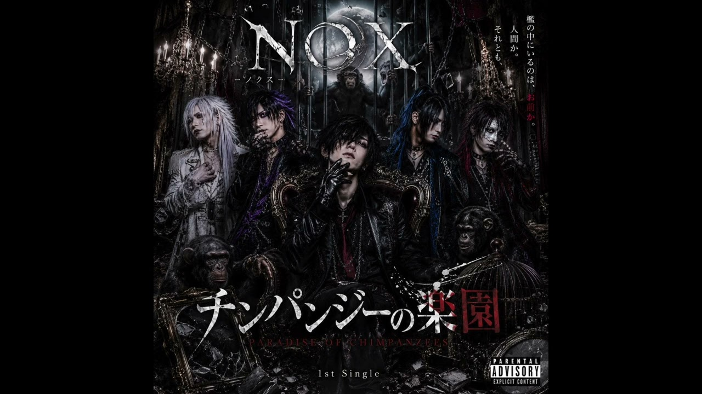

SUZUKA Original AI Artist / Group
NOX
NOX
黒羽狂司がVocal・作詞・世界観構築を担う5人組ヴィジュアル系AIバンド。

世界観
人間の本能、社会の矛盾、夜の奥に潜む衝動を、黒い寓話として描く。
音楽性
V系、ダークロックを中心に、挑発的な問いと物語性を強いバンドサウンドへ刻む。
V系 / ゴシックロック / ダークロック / 邦ロック
最新曲
SUZUKAおすすめ
初めて聴くなら、この3曲
正本のfeatured・代表設定・recommendationWeight・公開日の順で決定的に選んでいます。実人気順位ではありません。

公開作品一覧

Upcoming
現在確認済みのUpcomingはありません。
Official MV / Shorts / News / Gallery
OFFICIAL YOUTUBE
Official Shorts / Videos


Official Lyrics
関連ジャンルのアーティスト
関連ジャンルのアーティストは今後追加予定です。